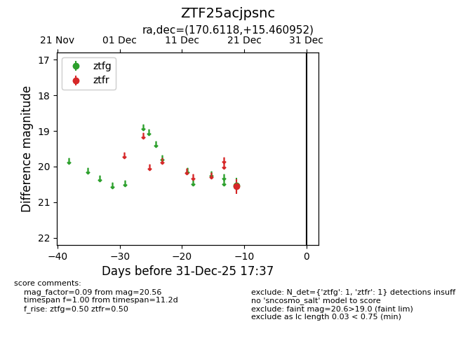
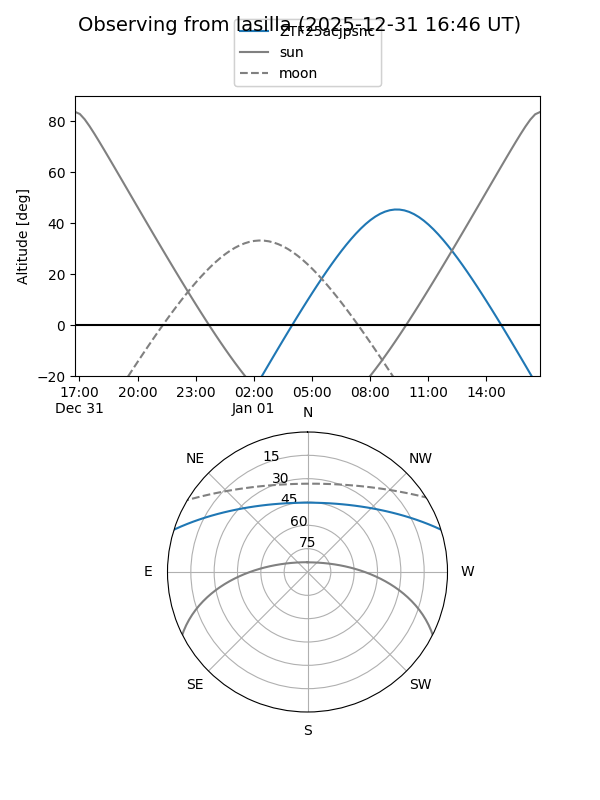
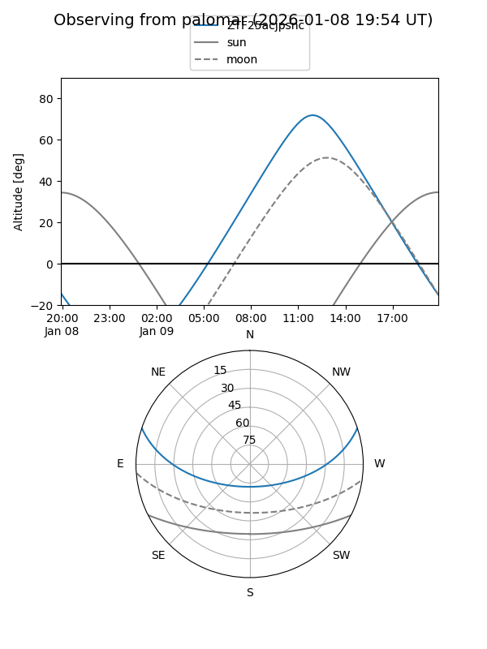

ZTF25acjpsnc
Target ZTF25acjpsnc at 2025-12-20 14:14
Aliases and brokers:
FINK: fink-portal.org/ZTF25acjpsnc
Lasair: lasair-ztf.lsst.ac.uk/objects/ZTF25acjpsnc
ALeRCE: alerce.online/object/ZTF25acjpsnc
alt names
ZTF25acjpsnc (ztf,fink_ztf)
Coordinates:
equatorial (ra, dec) = 170.6118,+15.46095
equatorial (HMS+DMS) = 11:22:26.83,+15:27:39.43
galactic (l, b) = (237.8482,+66.27421)
Flags:
Photometry:
last ztfg=20.53
1 ztfg detections
Lightcurve

Visibility


Additional plots